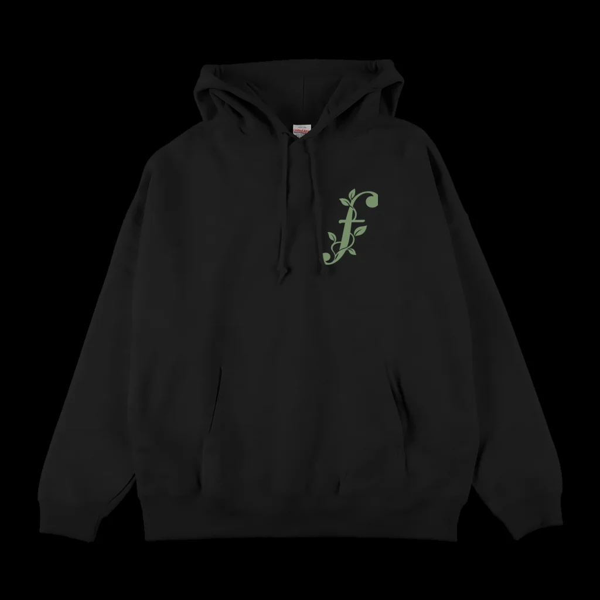

フォルテ単独ロゴ
FUNtasia Studioの追加8色。PNG・背景透過。
8色ZIPをダウンロードFUNtasia Goods · Free Wallpapers & Cursors
FUNtasia Studioの植物をモチーフにしたモノグラムを、7つの落ち着いたテーマカラーで楽しめる無料壁紙。4K横型・ウルトラワイド・縦型の3サイズ、合計21枚をまとめてダウンロードできます。Windows 11向けの無料マウスカーソル7テーマもご用意しています。


収録サイズ：3840 × 2160（4K）、5120 × 2160（ウルトラワイド）、2160 × 3840（縦型）
内容：7色 × 3サイズ＝21枚のPNG画像 / ZIP約37.1 MB
壁紙のプレビュー画像とZIPは、現在も既存のFUNtasia Audio公開サイト・GitHub Releasesを利用しています。移行中も既存のダウンロードURLを維持します。
FUNtasia Alchemist Cursors · Free Windows 11 Cursors
FUNtasia Studioの7色テーマに合わせた、Windows 11向けの無料マウスカーソルセット。各テーマには17種類のポインター役割が含まれ、待機中とバックグラウンド作業中のアニメーションカーソルも収録されています。

Windows 11向け・無料 / v0.1 / ZIP約3.6 MB。アーカイブを展開し、付属の Install.cmd からカラーを選択できます。詳しい手順・注意事項はリリース情報をご確認ください。
Official Logo Assets · Free Downloads
SUZURIなどにないアイテムも、好きなプリントサービスで。フォルテ単独・FUNtasia文字付き・Hʉeliang DJロゴの透過PNGを無料で配布しています。
FUNtasia Studioの追加8色。PNG・背景透過。
8色ZIPをダウンロードフォルテとFUNtasiaの組み合わせ。追加8色・背景透過PNG。
8色ZIPをダウンロードHʉeliangのDJワードマーク。追加8色・背景透過PNG。
8色ZIPをダウンロード基本カラーと制作向けの参考ファイルを同梱。
基本キットをダウンロード個人用のオーダーメイドグッズ制作や、制作を依頼する印刷サービスへの入稿に利用できます。
素材データの再配布・無断販売・公式商品と誤認される利用はご遠慮ください。商用利用を希望する場合はお問い合わせください。
おすすめの制作ショップ
CORNER PRINTINGは、Tシャツやパーカーの生地・色・加工方法にこだわりたい方におすすめです。無料の公式ロゴ素材を使って、お好みのアイテムを個人用にオーダーできます。注文・価格・配送条件は制作ショップでご確認ください。

FUNtasia Store · SUZURI
SUZURIでFUNtasiaのグッズをご覧いただけます。商品の種類・価格・配送条件はSUZURIのページでご確認ください。